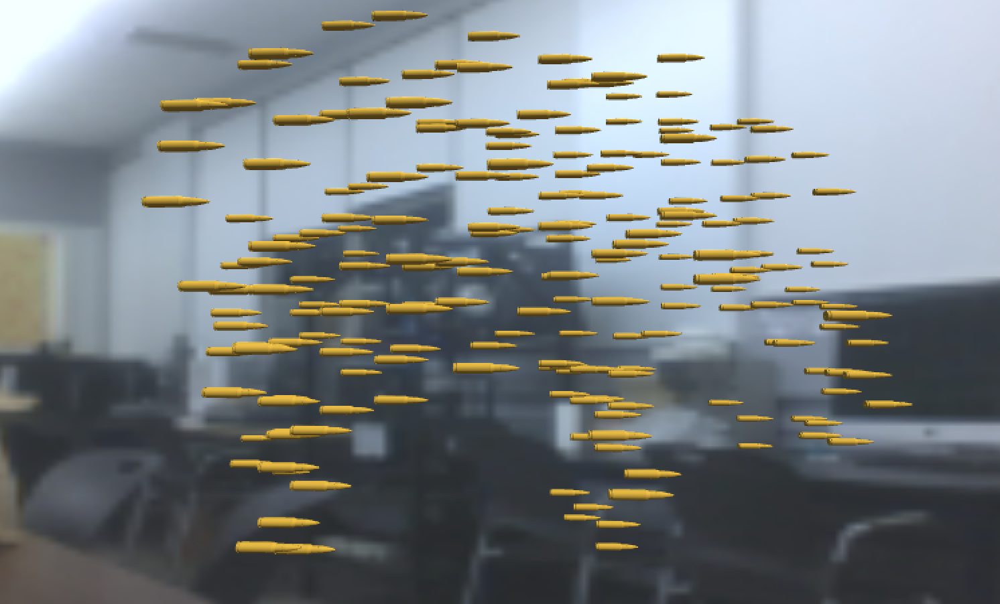
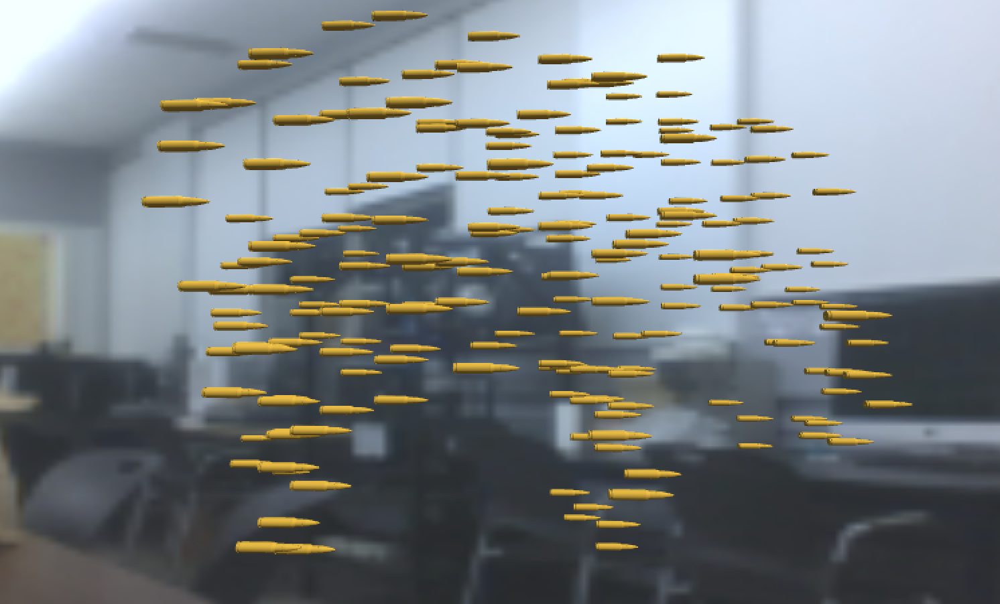

"Extant"
AR Mobile App
Unity and Blender
2020
Extant is an AR mobile application that reveals a specific elephant in the room. It points to the notion of society not making eye contact with a sensitive topic. And in this case, it is the topic of mass shootings in America.
The idea behind the “elephant in the room” is believed to be rooted from the Russian writer, Ivan Andreevich Krylov, who wrote a fable called “The Inquisitive Man”. In researching this fable, I came across an article made by John Lubans. One thing I took away from his article was the way he deciphered Krylov’s work with another metaphor, as though our society was swatting away at mosquitos, where there is a dragon flying above us. Meaning, there are small problems that we tend to focus on as a society, when there is a much larger issue at hand. I believe that “Extant” helps by provoking questions and conversations on the matter.
In the app, it displays the viewers space, but as the viewer looks around, an elephant appears. It is not a typical one. It is a grouping of 5.56mm NATO bullets formed into the shape of an elephant. The NATO is specifically used by the AR15 assault rifle, the rifle that is used for most of America’s mass shootings.It is still a huge question as to why so many people have access to purchasing this gun.